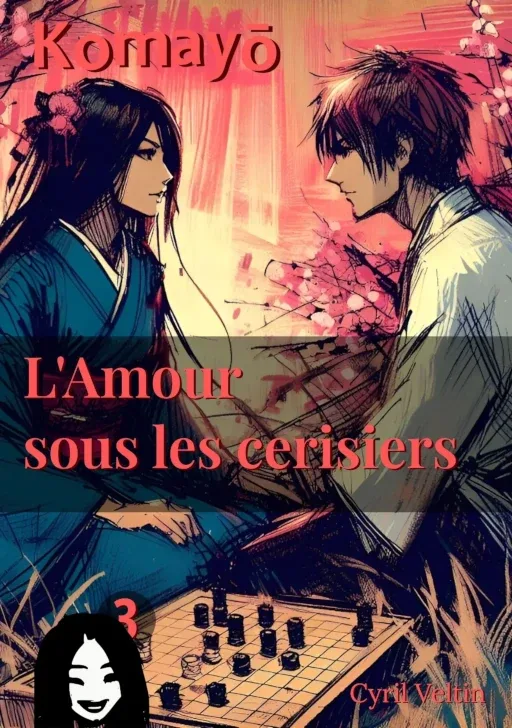

L'Amour sous les cerisiers

ISBN : 978-2-9589581-2-1
Préambule
Une nymphe mystique et un jeune idéaliste se rencontrent dans un jardin.
Il pense la chercher, elle l'a déjà choisi.
Elle veut capturer son âme, il désire conquérir son cœur.
Il lui propose une partie de ōgi, elle l'invite dans l'au-delà.
En ce jeu où l'éternel et l'éphémère s'entremêlent, destin et dessein dansent la dernière figure.
Extraits choisis
Les Rêves Inachevés de Jun
Dans l'étau de la réalité quotidienne, Jun porte en lui un monde intérieur aussi vaste que mystérieux, un univers parallèle qui prend vie chaque nuit dans la chambre d'écho de ses songes. Cette dimension onirique, plus tangible pour lui que le monde éveillé, l'appelle avec une insistance grandissante.
Le Pacte Éthéré
Il pourrait y avoir un moyen, commence-t-elle, sa main glissant délicatement sur le plateau de ōgi.Si tu remportes cette partie, je pourrais peut-être trouver un chemin pour te rejoindre dans ton monde. Mais si tu perds..., sa voix s'éteint, son regard intense se fixant dans celui de Jun,alors tu devras me suivre, dans un lieu où le temps et l'espace se fondent dans l'infini.